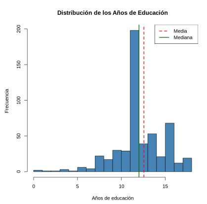
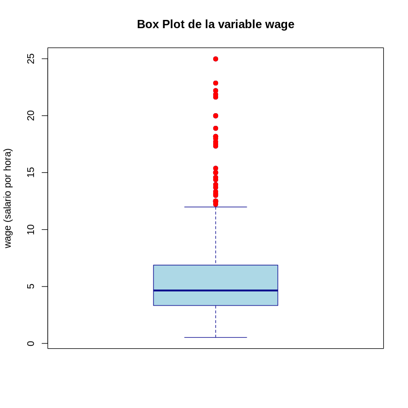

Ayudantía 1 · Repaso de estadística
Contenido oficial de la ayudantía
Esta página reproduce íntegros y en orden los repasos de la semana 1 (sem1/repaso_ayudantia.tex
y sem1/repaso_estadistica.tex). Se trabajan en la ayudantía, no en la cátedra del viernes
(Clase 1). Las soluciones de los ejemplos aparecen plegadas para que intentes
resolverlos antes.
Cómo estudiar esta página
La ayudantía está ordenada en 4 temas. Cada tema parte con una pregunta guía, sigue con las láminas y los simuladores, y termina con ✍️ preguntas de selección múltiple (cada alternativa incorrecta explica por qué no lo es) y un 🧪 ejercicio de R que puedes editar y ejecutar aquí mismo, sin instalar nada. Los 4 ejercicios de R en un solo archivo: 📥 ayudantia1.R.
🎯 Objetivos
- Repasar estadística descriptiva: localización, dispersión, histograma y boxplot.
- Usar el Teorema Central del Límite para construir intervalos de confianza para una media.
- Construir intervalos para proporciones y para la diferencia de dos medias, y calcular tamaños muestrales.
🗺️ Temas de la ayudantía
Haz clic en un tema para ir directo a él.
- 1Estadística descriptivaParte 1 · láminas 1–10 · ✍️ 2 preguntas · 🧪 R
- 2TCL e intervalos de confianza para la mediaParte 2 · láminas 1–14 · ✍️ 2 preguntas · 🧪 R
- 3Intervalos de confianza para proporcionesParte 2 · láminas 15–24 · ✍️ 2 preguntas · 🧪 R
- 4Intervalos para la diferencia de mediasParte 2 · láminas 25–34 · ✍️ 2 preguntas · 🧪 R
Repaso de estadística descriptiva
📄 Diapositivas: sem1/repaso_ayudantia.tex · 10 láminas
Estadística descriptiva
¿Cómo resumir muchos datos en pocos números y gráficos?
Ramas de la Estadística
La Estadística se divide en dos áreas:
-
Estadística Descriptiva: se emplea como una primera aproximación a los datos. Utiliza tablas y gráficos para resumir la información disponible.
-
Estadística Inferencial: va un poco más allá. A partir de los datos desarrolla mecanismos de decisión parar determinar si los datos sustentan o no una hipótesis. Permite hacer predicciones.
Estadística Descriptiva
-
Los estadísticos son funciones de los datos de una muestra:
\[ f(X_1,....,X_n) \] -
gráficos: histogramas, gráficos de caja
-
tablas: de frecuencia, contingencia, etc.
Estadísticos de Localización Central
-
Media empírica o promedio:
\[ \bar{X}=\frac{1}{n}\sum_{i=1}^n X_i \] -
Mediana: Si se tiene una muestra \(X_1,...,X_n\), se ordenan los datos de menor a mayor: \(X_{(1)},...X_{(n)}\). La mediana es la observación que queda en el medio.
\[ Med(X_1,....,X_n)=\left\{ \begin{array}{ll} X_{(\frac{n+1}{2})}, & \hbox{si $n$ es impar} \\ \frac{X_{(n/2)}+X_{(n/2+1)}}{2}, & \hbox{si $n$ es par} \end{array} \right. \]
-
Suponiendo que se tienen 13 datos (caso de \(n\) impar):
\[ X_{(1)},......,\underbrace{X_{(7)}}_\text{mediana},......,X_{(13)} \] -
Suponiendo que se tienen 12 datos (caso de \(n\) par):
\[ X_{(1)},......,\underbrace{X_{(6)},X_{(7)}}_\text{mediana$=\frac{X_{(6)}+X_{(7)}}{2}$},......,X_{(12)} \]
Estadísticos de Localización
-
Un percentil es una medida estadística que indica la posición de un dato dentro de un conjunto de observaciones, dividiendo los datos en 100 partes iguales.
-
Los percentiles más empleados son: \(P_{25}\), \(P_{50}=Mediana\), \(P_{75}\) y se conocen como cuartiles ya que dividen a los datos en 4 partes (se suelen nombrar \(q_1\), \(q_2\) y \(q_3\)).
-
También existen los quintiles y deciles, según se dividan a los datos en 5 o 10 partes.
Estadísticos de dispersión
-
El rango intercuartílico: se define como:
\[ RIQ(X_1,...,X_n)=q_3-q_1 \] -
La varianza muestral o empírica se define como:
\[ Var(X_1,...,X_n)=\frac{\sum_{i=1}^n (X_i-\bar{X})^2}{n-1} \]
-
La desviación estándar muestral o empírico es la raíz cuadrada de la varianza, es decir:
\[ S(X_1,...,X_n)=\sqrt{\frac{\sum_{i=1}^n (X_i-\bar{X})^2}{n-1}} \]
Histograma
El histograma resume los datos dentro de algunos rangos y se cuenta el número de observaciones dentro de cada rango.

Gráfico de caja - Boxplot

-
Línea en medio de la caja: \(Med\) (mediana).
-
Límite superior de la caja: \(q_3\) (tercer cuartil).
-
Límite inferior de la caja: \(q_1\) (primer cuartil).
-
notar que el largo de la caja representa el \(RIQ\) (rango intercuartilico).
-
Bigote superior: es el mínimo entre \(q_3+ 1.5RIQ\) y el máximo de los datos (\(X_n\)).
-
Bigote inferior: es el máximo entre \(q_1 - 1.5RIQ\) y el mínimo de los datos (\(X_1\)).
-
Puntos fuera de los bigotes: Todos los puntos que exceden los bigotes se grafican. Son puntos extremos (atípicos).
✍️ Practica · Tema 1
En un boxplot, ¿qué representa la caja?
✅ Láminas 9–10: la caja va de q₁ a q₃ y la línea interior es la mediana.
Dos cursos tienen promedio 5.0. En el A las notas van de 4.8 a 5.2; en el B, de 2.0 a 7.0. ¿Qué estadístico los distingue?
✅ Láminas 6–7: los estadísticos de dispersión miden cuán alejados están los datos de su centro.
🧪 Practica en R · Media, mediana y un atípico
Calcula los estadísticos de localización y dispersión de 15 sueldos con un valor atípico, y dibuja su histograma y su boxplot.
# 15 sueldos en miles de pesos; el último es un atípico (10 millones)
sueldos <- c(520, 610, 580, 700, 650, 590, 720, 680, 560, 630,
600, 750, 640, 610, 10000)
c(media = mean(sueldos), mediana = median(sueldos))
c(desv_estandar = sd(sueldos), rango_intercuartil = IQR(sueldos))
quantile(sueldos) # cuartiles: q1, mediana y q3
par(mfrow = c(1, 2))
hist(sueldos[-15], main = "Histograma (sin el atípico)", xlab = "miles de $")
boxplot(sueldos, main = "Boxplot: el atípico aparte")
par(mfrow = c(1, 1))
🎯 Reto: elimina el 10000 del vector. ¿Cuánto cambia la media? ¿Y la mediana?
Repaso de estadística inferencial
📄 Diapositivas: sem1/repaso_estadistica.tex · 34 láminas
TCL e intervalos de confianza para la media
¿Cuánto podemos confiar en un promedio calculado con una muestra?
Estadística Inferencial
-
Utiliza los datos muestrales para inferir sobre la población.
-
Requiere hacer supuesto sobre la población de interés. Uso de las teoría de probabilidades.
Intervalos de confianza (IC)
-
En lugar de ofrecer un valor único, se ofrece un rango de valores donde es más probable que el parámetro se encuentre.
-
Este rango de valores lo llamaremos Intervalo de confianza (IC).
-
Ventaja: da una idea de la precisión que se tiene al estimar.
-
Para construir un IC hay que decidir previamente el nivel de confianza que se quiere tener.
Teorema central del límite
-
La distribución muestral del promedio es la distribución de probabilidad de todos los posibles promedios de muestras de un determinado tamaño (\(n\)), seleccionadas desde una población.
-
Para una población con media \(\mu\) y varianza \(\sigma^2\) la distribución muestral de los promedios de todas las posibles muestras de tamaño n generadas desde la población serán, aproximadamente, normalmente distribuidas.
-
La media de la distribución muestral será igual a \(\mu\) y la varianza igual a \(\sigma^2/n\).
Supuestos TCL
-
Muestreo aleatorio: Las observaciones deben ser i.i.d. \((X_1, X_2, \ldots, X_n)\).
-
Tamaño muestral adecuado (regla de dedo):
\[ n \text{ debe ser } \begin{cases} \geq 30 & \text{para distribuciones simétricas (normal)} \\ \geq 50 & \text{para distribuciones asimétricas} \\ \geq 100 & \text{para distribuciones muy asimétricas} \end{cases} \] -
Varianza finita: \(\sigma^2 < \infty\)
-
Media finita: \(\mu < \infty\)
IC. ejemplo1
Una tienda quiere obtener una estimación de las ventas mensuales promedio de un cierto producto. Supongamos que las ventas de este producto son bastante estables a los largo del año. Se dispone de una m.a. \(X_1,...,X_{36}\) de datos de venta mensual y \(\bar{x}=200\). Obtener un IC de 95% para la media poblacional.
-
Como \(n=36>30\) aplica el TCL.
\[ \bar{X} \stackrel{aprox.}\sim N(\mu,\frac{\sigma^2}{n}) \] -
\(\mu\) es la media poblacional que desconocemos
-
\(\sigma^2\) es la varianza poblacional (supongamos que es conocida por el momento)
\[ \sigma^2=60^2 \]
Solución
-
\[ \frac{\bar{X}-\mu}{\frac{\sigma}{\sqrt{n}}}=\frac{\bar{X}-\mu}{\frac{60}{\sqrt{36}}}=\frac{\bar{X}-\mu}{10} \stackrel{aprox.}\sim N(0,1) \]
-
Intervalo de confianza de 95%
\[ P(a\leq \frac{\bar{X}-\mu}{\frac{\sigma}{\sqrt{n}}}\leq b)=0.95 \]
Solución (continuación)
El intervalos de confianza de 95% para \(\mu\) cuando \(\sigma\) es conocido está dado por:
-
Esto es así si \(n\geq 30\) o bien
-
si \(n<30\) pero la muestra es normal
Intervalo de confianza de 95%
El intervalo de confianza de 95% para \(\mu\) cuando \(\sigma\) es conocido está dado por:
-
Esto es así si \(n\geq 30\) o bien
-
si \(n<30\) pero la muestra es normal
Otros niveles de confianza
Si \(\alpha\) es un número entre 0 y 1. El intervalo de confianza de \(100(1-\alpha)\%\) para la media poblacional \(\mu\) cuando \(\sigma\) es conocido se obtiene de la siguiente forma:
-
Se identifica: \(z_{\frac{\alpha}{2}}\)
-
Finalmente el IC de \(100(1-\alpha)\%\) es:
\[ \color{red}{\bar{x} \pm z_{\frac{\alpha}{2}}\frac{\sigma}{\sqrt{n}}} \]
Suponga que se desea aumentar la confiabilidad y hacer un intervalo de 99%
-
\(1-\alpha=0.99,\) entonces \(\frac{\alpha}{2}=0.005\).:
\[ z_{0.005}=-2.57 \] -
\[ IC_{99\%}=(\bar{x}+z_{0.005}\frac{\sigma}{\sqrt{n}};\bar{x}-z_{0.005}\frac{\sigma}{\sqrt{n}}) \]
-
\[ IC_{99\%}=(200-(2.57)10;200+(2.57)10) \]
-
\[ \color{red}{IC_{99\%}=(174.3;225.7)} \]
Haz clic: Excel
Comparación de IC con distintos niveles de confianza.
Si aumento el nivel de confianza y el intervalo se hace mayor!!!
Intervalos de confianza: nivel de confianza y precisión
Si tomamos como estimador puntual \(\bar{X}\)
-
Con un 95% de confianza el verdadero valor del parámetro \(\mu\) no estará mas lejos de:
\[ E_{95}=(1.96)\frac{\sigma }{\sqrt{n}} \] -
Con un 99% de confianza el verdadero valor del parámetro \(\mu\) no estará mas lejos de:
\[ E_{99}=(2.58)\frac{\sigma }{\sqrt{n}} \] -
Llamaremos a \(E\) error absoluto de la estimación
Nivel de confianza y precisión.
-
Si para una misma muestra aumentamos el nivel de confianza (por ejemplo de 95% a 99%) lograremos una mejora en la confiabilidad... pero se pierde precisión (mayor error absoluto)
-
el error absoluto (\(E_{95}\)) del IC de 95%:
\[ {\color{blue}{E_{95}}}=(1.96)\frac{\sigma }{\sqrt{n}} \] -
el error absoluto (\(E_{99}\)) del IC de 99%:
\[ {\color{blue}{E_{99}}}=(2.58)\frac{\sigma }{\sqrt{n}} \] -
confiabilidad \((1-\alpha)\) \(\uparrow \Rightarrow\) precisión \(\downarrow\)
-
Intervalos de confianza: determinación del tamaño muestral
-
Antes de realizar un muestreo se puede definir el nivel de confianza y precisión (error absoluto) deseados y luego determinar el tamaño muestral (\(n\))
-
suponiendo \(\sigma\) conocido y eligiendo \(E\) (el error absoluto) y \(\alpha\):
\[ {\color{blue}{E}}=-z_{\frac{{\color{blue}{\alpha}}}{2}}\sigma/\sqrt{{\color{red}{n}}} \] -
luego, despejando \(n\):
\[ n=(z_{\frac{\alpha}{2}}\frac{\sigma}{E})^2 \] -
si el valor resultante no es entero se redondea hacia arriba.
✍️ Practica · Tema 2
¿Qué dice el Teorema Central del Límite?
✅ Láminas 3–4: X̄ ≈ N(μ, σ²/n) si n ≥ 30, o para cualquier n si la población es normal.
Con x̄ = 200, σ = 60 y n = 36, ¿cuál es el IC de 99% para μ?
✅ 200 ± 2.576 · 60/√36 = 200 ± 25.8. Pruébalo en la calculadora de intervalos.
🧪 Practica en R · El TCL y el 95%
Comprueba el TCL con una población muy asimétrica, reproduce el IC de la lámina 5 y verifica qué significa el 95%.
# TCL: la población es muy asimétrica, pero el promedio de 36 datos no
set.seed(36)
promedios <- replicate(5000, mean(rexp(36, rate = 1 / 200))) # μ = σ = 200
hist(promedios, breaks = 40, main = "5 000 promedios de n = 36",
xlab = "x barra")
c(media = mean(promedios), sd = sd(promedios), sd_teorica = 200 / 6)
# IC de 95% de la lámina 5: x barra = 200, σ = 60, n = 36
200 + c(-1, 1) * qnorm(0.975) * 60 / sqrt(36)
# ¿Qué significa el 95%? El intervalo atrapa a μ en ~95% de las muestras
cubre <- replicate(5000, {
x <- rnorm(36, mean = 200, sd = 60)
abs(mean(x) - 200) <= 1.96 * 60 / sqrt(36)
})
mean(cubre)
🎯 Reto: cambia 0.975 por 0.995 en el IC. ¿El intervalo de 99% es más ancho o más angosto?
Intervalos de confianza para proporciones
¿Cómo estimar un porcentaje, como la tasa de productos defectuosos?
Intervalos de confianza para las proporciones
-
Sea \(\bf{p}\) la proporción de éxitos en una población.
-
éxito: identifica a un individuo de una población con una determinada característica.
-
ejemplos:
-
proporción de fallas en una población de un determinado artefacto.
-
proporción de enfermos en una población.
-
proporción de aprobados en un curso
-
-
Recordemos que la v.a. :
\[ X\equiv \text{número de éxitos en una muestra de tamaño } n \]Distribuye \(Bin(n,p)\)
-
Además si \(n\geq 30\)
\[ X\stackrel{aprox.}\sim N(np,np(1-p)) \] -
Se pedirá adicionalmente que \(np>5\) y \(n(1-p)>5\)
-
Un buen estimador puntual para \(p\) es \(\hat{p}=\frac{X}{n}\) la fracción de éxitos en la muestra.
-
Ahora:
\[ \hat{p}\stackrel{aprox.}\sim N(p,\frac{p(1-p)}{n}) \]y
\[ \frac{\hat{p}-p}{\sqrt{\frac{p(1-p)}{n}}}\stackrel{aprox.}\sim N(0,1) \]
Entonces se puede emplear la distribución normal para armar un IC para las proporciones. En este caso:
Es decir:
El IC se construye como:
IC para las proporciones: ejemplo
Un fabricante asegura, a una compañía que le compra un producto en forma regular, que el porcentaje de productos defectuosos es 5%. La compañía decide comprobar la afirmación del fabricante seleccionando de su inventario 200 unidades del producto y probándolas. En este procedimiento se detectan 19 unidades defectuosas en la muestra. ¿Es coherente este resultado con la afirmación del proveedor? Utilice una confiabilidad de 95%.
IC para las proporciones. respuesta de ejemplo
Solución
El proveedor afirma que \(p\) es \(0.05\). Este valor no cae dentro del IC.
IC para las proporciones: determinación del tamaño muestral
-
Aquí también se puede determinar \(n\) fijando el nivel de confianza y el largo del intervalo.
-
se requiere una estimación inicial de \(p\), \(p^*\).
-
Para obtener \(p^*\) se puede extraer una muestra preliminar (más pequeña), o usar \(p^*=0.5\) (peor escenario).
-
En este caso el error absoluto es:
\[ E=-z_{\frac{\alpha}{2}}\sqrt{\frac{p^*(1-p^*)}{n}} \] -
luego, despejando \(n\):
\[ n=\frac{z_{\frac{\alpha}{2}}^2p^*(1-p^*)}{E^2} \]
IC para las proporciones
Un fabricante produce chips para computadores. Cada chip tiene una probabilidad \(p\) de tener una calidad aceptable. Para obtener un IC de 95% para \(p\) cuya longitud no exceda \(0.05\), se toma una muestra inicial de 30 chips. De estos 30 chips, 26 resultaron con una calidad aceptable. ¿Cuál es el tamaño muestral necesario para obtener un intervalo con las características requeridas?
✍️ Practica · Tema 3
Con 19 defectuosos en 200 unidades, el IC de 95% es (0.054; 0.136). El proveedor dice que p = 0.05. ¿Qué concluyes?
✅ Es la conclusión de la lámina 21.
Sin información previa sobre p, ¿qué p* conviene usar para calcular el tamaño muestral?
✅ Lámina 22: p* = 0.5 es el peor escenario.
🧪 Practica en R · Productos defectuosos
Reproduce el intervalo de la lámina 21 y calcula cuántas unidades harían falta para un error de ±3 puntos porcentuales.
# Lámina 20: 19 defectuosos en 200 unidades
x <- 19
n <- 200
p <- x / n
p + c(-1, 1) * qnorm(0.975) * sqrt(p * (1 - p) / n) # (0.0543; 0.1356)
# Tamaño muestral para un error E = 0.03 con p* = 0.5 (peor escenario)
E <- 0.03
ceiling(qnorm(0.975)^2 * 0.5 * (1 - 0.5) / E^2)
🎯 Reto: usa p* = 0.095 en vez de 0.5 en el tamaño muestral. ¿Cuántas unidades necesitas ahora?
Intervalos para la diferencia de medias
¿Ganan distinto, en promedio, los egresados de dos carreras?
Intervalos de confianza diferencia de media de dos poblaciones
Se cree que el salario promedio de recién egresados de la carrera de ingeniería industrial es mayor que el salario promedio de recién egresados de arquitectura. Se obtuvieron muestras aleatorias de cada grupo de egresados:
-
\(X_1,....,X_{n_x}\): salarios de egresados de ing. industrial
-
\(Y_1,....,Y_{n_y}\): salarios de egresados de arquitectura
-
Se supone que las muestras son independientes entre si
Diferencia de media de dos poblaciones
Llamaremos:
-
\(\mu_x\): media poblacional de salarios de egresados de ing. industrial
-
\(\mu_y\): media poblacional de salarios de egresados de arquitectura
La idea es armar un IC para:
-
Si el cero cae dentro del intervalo, los datos no dan evidencia de diferencia entre las medias
-
Si el cero cae fuera del intervalo, los datos dan evidencia de diferencia entre las medias
Caso \(\sigma_x^2\) y \(\sigma_y^2\) conocidos, con \(n_x\) y \(n_y\) grandes
-
\(\bar{X} \stackrel{aprox.}\sim N(\mu_x,\frac{\sigma_x^2}{n_x})\)
-
\(\bar{Y} \stackrel{aprox.}\sim N(\mu_y,\frac{\sigma_y^2}{n_y})\)
-
\(\bar{X}-\bar{Y}\) también es aproximadamente normal
-
\(E(\bar{X}-\bar{Y})=E(\bar{X})-E(\bar{Y})=\mu_x-\mu_y\)
-
\(V(\bar{X}-\bar{Y})=V(\bar{X})+V(\bar{Y})=\frac{\sigma_x^2}{n_x}+\frac{\sigma_y^2}{n_y}\) (porque las muestras son independientes)
Por ello,
De aquí surge que:
\(P((\bar{X}-\bar{Y}) + z_{\frac{\alpha}{2}}\sqrt{\frac{\sigma_x^2}{n_x}+\frac{\sigma_y^2}{n_y}}\leq \mu_x-\mu_y\leq (\bar{X}-\bar{Y})-z_{\frac{\alpha}{2}}\sqrt{\frac{\sigma_x^2}{n_x}+\frac{\sigma_y^2}{n_y}})\) \(\simeq 1-\alpha\)
El IC de \((1-\alpha)100\%\) para la diferencia de medias \(\mu_x-\mu_y\) es:
Ejemplo
En el ejemplo de salarios. Supongamos que:
-
\(\bar{X}=\$800000\)
-
\(\bar{Y}=\$680000\)
-
\(n_x=144\)
-
\(n_y=121\)
-
\(\sigma_x=60000\)
-
\(\sigma_y=50000\)
Obtener un IC de 95% para la diferencia de medias.
Solución
El IC de 95% es:
Conclusión
Como el intervalo para \(\mu_x-\mu_y\) no contiene al cero, el resultado nos está dando evidencia de que las medias poblacionales son diferentes. Los salarios promedio de los egresados de ingeniería son más altos en promedio que los de arquitectura.
✍️ Practica · Tema 4
El IC de 95% para μₓ − μᵧ es (106 756; 133 244). ¿Qué significa que no contenga al cero?
✅ Es la conclusión de la lámina 34.
Si aumentas nₓ y nᵧ (y lo demás no cambia), el intervalo para μₓ − μᵧ…
✅ Más datos, menos incertidumbre: el error estándar disminuye.
🧪 Practica en R · Ingeniería contra arquitectura
Reproduce el intervalo de la lámina 33 para la diferencia de salarios promedio.
# Lámina 32: salarios de egresados de ingeniería (X) y arquitectura (Y)
xbar <- 800000; ybar <- 680000
nx <- 144; ny <- 121
sx <- 60000; sy <- 50000
ee <- sqrt(sx^2 / nx + sy^2 / ny) # error estándar
(xbar - ybar) + c(-1, 1) * qnorm(0.975) * ee # (106 756; 133 244)
🎯 Reto: ¿cuánto tendría que valer ybar para que el intervalo contuviera al cero? Pruébalo.
🧠 Ideas clave
- La media se deja arrastrar por los atípicos; la mediana y el rango intercuartil, no.
- Por el TCL, \(\bar{X}\) es aproximadamente \(N(\mu, \sigma^2/n)\) aunque la población no sea normal.
- Un IC de 95% atrapa a μ en el 95% de las muestras; más confianza implica un intervalo más ancho.
- Para reducir el error a la mitad se necesitan cuatro veces más datos.
✅ Autoevaluación
Construiste un IC de 95% para μ y obtuviste (180.4 ; 219.6). ¿Cuál interpretación es correcta?
✅ μ es fijo: un intervalo ya calculado lo contiene o no. El 95% es una propiedad del procedimiento (revisa el simulador de cobertura). La tercera opción confunde la distribución de x̄ con la de las ventas individuales.
Si cuadruplicas el tamaño muestral n (manteniendo σ y la confianza), el error absoluto E…
✅ E = z·σ/√n, y √(4n) = 2√n. Para reducir el error a la mitad necesitas cuatro veces más datos.
En una muestra de 15 sueldos aparece uno de 10 millones. ¿Qué estadístico cambia más?
✅ La media usa el valor de cada dato, así que un atípico la arrastra; la mediana solo depende de la posición central. Pruébalo agregando un atípico en el simulador de estadística descriptiva.